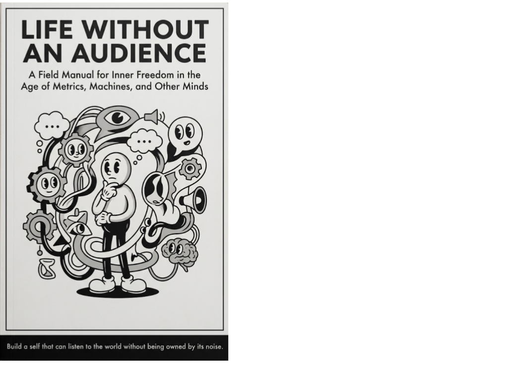

Outfinitist Philosophy · Axiologic Research Editions
Life Without an Audience
A Field Manual for Inner Freedom in the Age of Metrics, Machines, and Other Minds
Build a self that can listen to the world without being owned by its noise.
The audience we carry
The most insistent audience is often absent. It lives in an internal scorecard assembled from parents, peers, feeds, status, work and fear of irrelevance. Life Without an Audience begins there, not with a promise to escape society, but with the harder question of how to participate in it without handing over the right to judge one’s own life.
Its teacher is deliberately imaginary. He is not a guru, clinician or owner of a revelation; he is a device for testing advice. The book brings evidence, Stoicism, Buddhism, Daoism, moral psychology and social research into conversation, while keeping a door open for correction.
Three practices, not three commandments
What is happiness when it cannot be counted? The book treats happiness as an ecology of attention, body, work, relationships and meaning, not a metric to optimize.
Can a community hold without capturing? It follows trust, betrayal, authority and care, asking how belonging can remain compatible with dissent and departure.
What happens when the audience becomes synthetic? AI can mirror, flatter, measure and advise at intimate scale. The question is whether it enlarges a person’s agency or becomes another machine for outsourced self-worth.
The deepest authority is the one that teaches you how to examine authority, including its own.
The final practice
This is a book for readers who do not want to trade the noise of social media for the noise of a new doctrine. Its aim is an inner constitution: habits that make a person more capable of attention, relation and principled refusal in a world designed to keep them performing.